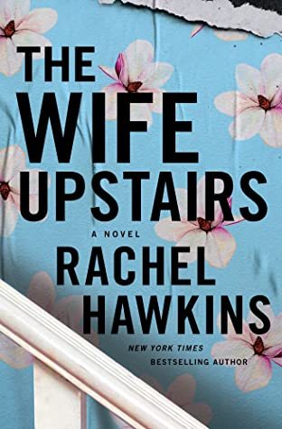
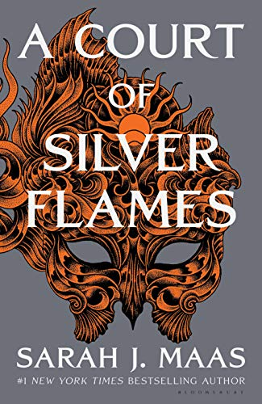
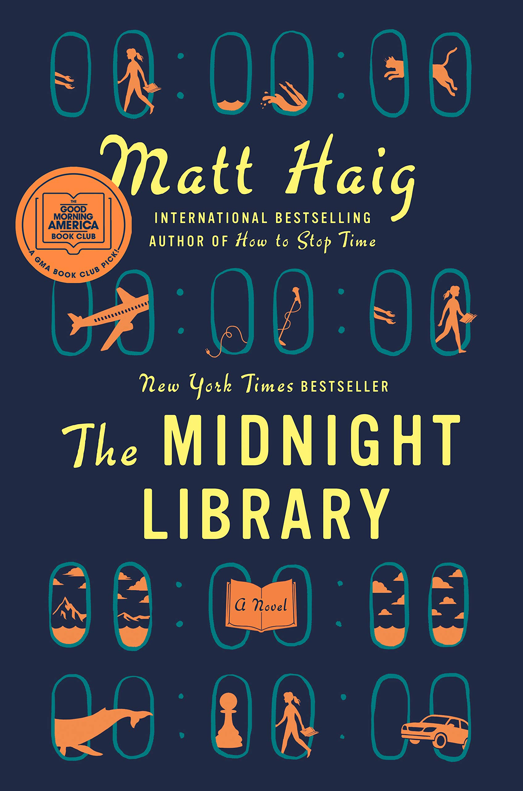

The Wife Upstairs by Rachel Hawkins
---------------------
Meet Jane. Newly arrived to Birmingham, Alabama, Jane is a broke dog-walker in Thornfield Estates––a gated community full of McMansions, shiny SUVs, and bored housewives. The kind of place where no one will notice if Jane lifts the discarded tchotchkes and jewelry off the side tables of her well-heeled clients. Where no one will think to ask if Jane is her real name.
But her luck changes when she meets Eddie Rochester. Recently widowed, Eddie is Thornfield Estates’ most mysterious resident. His wife, Bea, drowned in a boating accident with her best friend, their bodies lost to the deep. Jane can’t help but see an opportunity in Eddie––not only is he rich, brooding, and handsome, he could also offer her the kind of protection she’s always yearned for.
Yet as Jane and Eddie fall for each other, Jane is increasingly haunted by the legend of Bea, an ambitious beauty with a rags-to-riches origin story, who launched a wildly successful southern lifestyle brand. How can she, plain Jane, ever measure up? And can she win Eddie’s heart before her past––or his––catches up to her?
With delicious suspense, incisive wit, and a fresh, feminist sensibility, The Wife Upstairs flips the script on a timeless tale of forbidden romance, ill-advised attraction, and a wife who just won’t stay buried. In this vivid reimagining of one of literature’s most twisted love triangles, which Mrs. Rochester will get her happy ending?

A Court of Silver Flames by Sarah J. Maas
---------------------
Nesta Archeron has always been prickly-proud, swift to anger, and slow to forgive. And ever since being forced into the Cauldron and becoming High Fae against her will, she's struggled to find a place for herself within the strange, deadly world she inhabits. Worse, she can't seem to move past the horrors of the war with Hybern and all she lost in it.
The one person who ignites her temper more than any other is Cassian, the battle-scarred warrior whose position in Rhysand and Feyre's Night Court keeps him constantly in Nesta's orbit. But her temper isn't the only thing Cassian ignites. The fire between them is undeniable, and only burns hotter as they are forced into close quarters with each other.
Meanwhile, the treacherous human queens who returned to the Continent during the last war have forged a dangerous new alliance, threatening the fragile peace that has settled over the realms. And the key to halting them might very well rely on Cassian and Nesta facing their haunting pasts.
Against the sweeping backdrop of a world seared by war and plagued with uncertainty, Nesta and Cassian battle monsters from within and without as they search for acceptance-and healing-in each other's arms.

The Midnight Library by Matt Haig
---------------------
Between life and death there is a library, and within that library, the shelves go on forever. Every book provides a chance to try another life you could have lived. To see how things would be if you had made other choices . . . Would you have done anything different, if you had the chance to undo your regrets?”
A dazzling novel about all the choices that go into a life well lived, from the internationally bestselling author of Reasons to Stay Alive and How To Stop Time.
Somewhere out beyond the edge of the universe there is a library that contains an infinite number of books, each one the story of another reality. One tells the story of your life as it is, along with another book for the other life you could have lived if you had made a different choice at any point in your life. While we all wonder how our lives might have been, what if you had the chance to go to the library and see for yourself? Would any of these other lives truly be better?
In The Midnight Library, Matt Haig’s enchanting new novel, Nora Seed finds herself faced with this decision. Faced with the possibility of changing her life for a new one, following a different career, undoing old breakups, realizing her dreams of becoming a glaciologist; she must search within herself as she travels through the Midnight Library to decide what is truly fulfilling in life, and what makes it worth living in the first place.